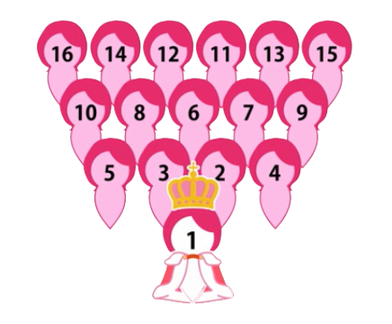
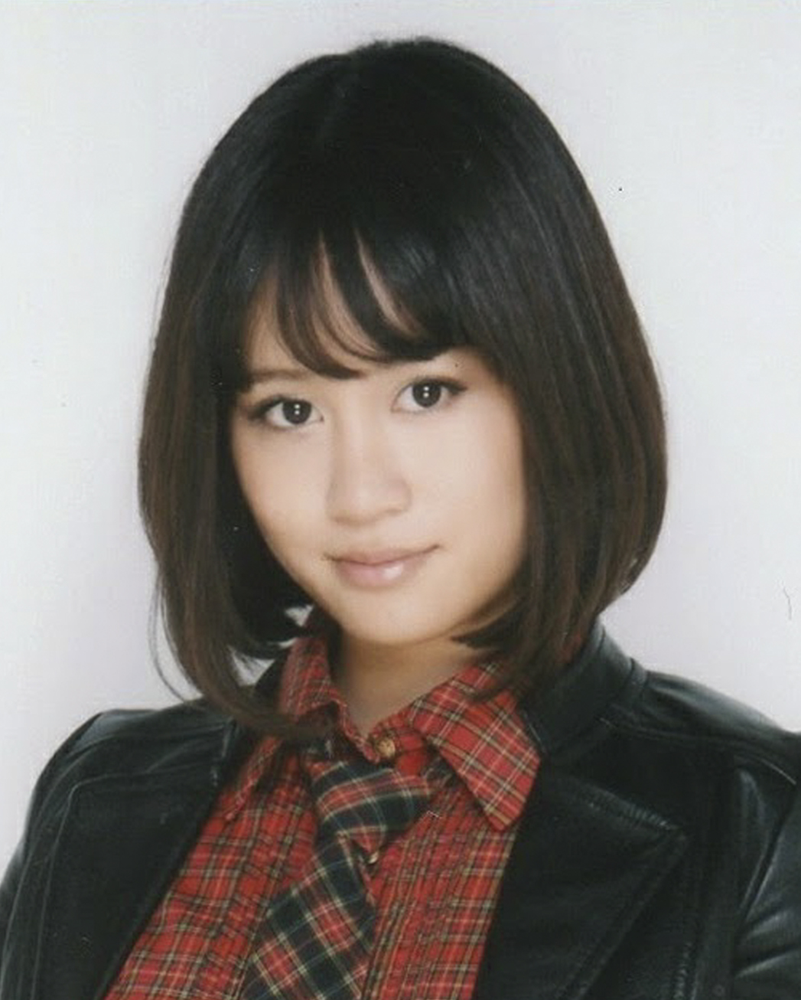
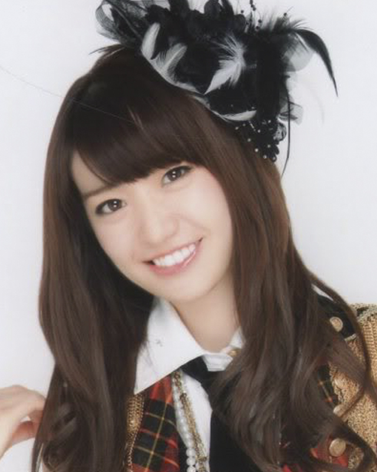
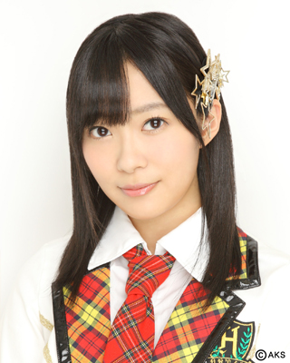
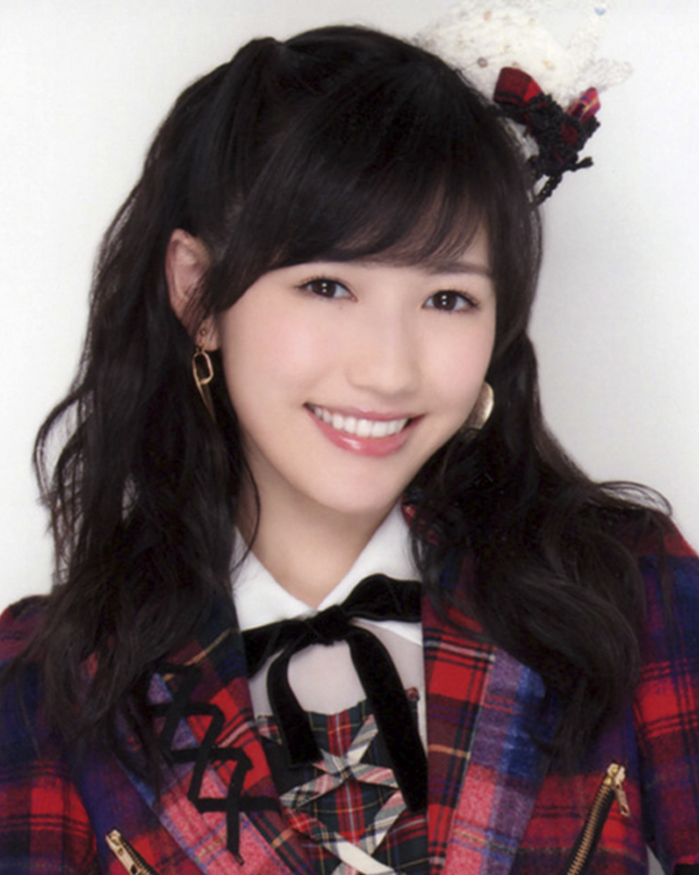

|  |
| 1 - 16 (Senbatsu) |
| 17 - 32 (Undergirls) |
| 33 - 48 (Next Girls) |
| 49 - 64 (Future Girls) |
| 65 - 80 (Upcoming Girls) |
| 2009 | 2010 | 2011 | 2012 |
|  |  | ||
| Maeda Atsuko (Acchan) |
Oshima Yuko (Yuko) |
Maeda Atsuko (Acchan) |
Oshima Yuko (Yuko) |
| 2013 | 2014 | 2015 | 2016 |
|  |  | ? | |
| Sashihara Rino (Sasshi) |
Watanabe Mayu (Mayuyu) |
Sashihara Rino (Sasshi) |
???? (????) |